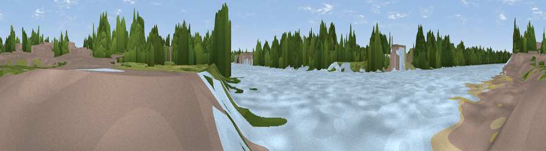

Viewpoint near Barnes
#45755 in England · top 84% of its area beats it · near BarnesThe view, rendered

A 360° render of this exact spot computed from the terrain model, tree cover and land cover — summer colours, afternoon light, calibrated against photographs of famous viewpoints. Real trees, hedges and buildings will differ in detail.
The panorama
Grey silhouette: terrain skyline in each direction (720 bearings, Earth curvature and refraction included). Dashed green: skyline with trees (+15 m) and buildings (+8 m) as obstacles. Blue strip: how far the ground is visible on each bearing.
Where the view opens
Wedge length = distance to the farthest visible ground on that bearing (vegetation-aware). Rings at 10, 25 and 50 km.
What fills the view
44% water · 32% woodland · 14% built-up · 9% grassland
Angular shares of the visible panorama (visual magnitude), not map area. Landscape diversity 0.53 (0–1 Shannon).
Key numbers
More beautiful places nearby
The staircase of upgrades: each row has a higher view potential than everything closer. Driving times are estimates from straight-line distance, calibrated against real road routing — check an actual route before setting out.
| Place | Direction | Drive | Score |
|---|---|---|---|
| Viewpoint near Barnes | WNW · 1 km | ~2 min | 23.2 |
| Putney Heath | SSW · 4 km | ~9 min | 27.9 |
| Viewpoint near Richmond | WSW · 6 km | ~13 min | 42.3 |
| Viewpoint near Richmond | WSW · 6 km | ~13 min | 43.7 |
| Parliament Hill | NNE · 10 km | ~20 min | 48.4 |
| Viewpoint near Catford | ESE · 12 km | ~22 min | 51.4 |
| Harrow on the Hill | NW · 14 km | ~25 min | 60.7 |
| Viewpoint near Chaldon | SSE · 24 km | ~39 min | 66.7 |
51.47388, -0.22192 · source: osm viewpoint · position refined by local search. Computed location — check access rights before visiting.